Último dia da viagem para São Thomé das Letras. Acordamos, café da manhã, e saímos a pé procurando um borracheiro na cidade. Pensava num esquema para resgatar a moto com pneu furado que deixei no camping depois do Vale das Borboletas.
O Resgate da Moto
Após perguntar pelo comércio, sem ter conseguido muita atenção além de "não sei", achei uma casa com placa de borracharia. Chamei, apareceu um senhor que já se mostrou sem muito boa vontade. Expliquei a situação, se tinha como ele ir ao local... negativo, se eu levasse a moto ele fazia o serviço. Não achei outro lugar para perguntar. Tá bom, não tem jeito, então, mãos à obra.Encurtando a estória: paguei um valor extorsivo, mesmo após muito negociar, em um dos carros velhos que ficam na praça para levarem turistas para as cachoeiras da região. Fui num gol quadrado caindo aos pedaços até o camping. Tentei usar o reparo de pneus, mas não adiantou, pois a câmara de ar deveria estar com um rasgo. Voltei empurrando a moto para a cidade, algo em torno de uma hora, com as paradas para respirar e descansar, sob sol escaldante. O caminho de volta, obviamente, era uma subida. Grande.
Já às portas da cidade, não entrei na primeira rua, que era outro ladeirão, e segui algumas ruas para pegar uma menos inclinada. E achei outra borracharia, que ninguém que eu perguntei falou que existia.
O borracheiro, Flávio, primeiro ficou rindo do meu estado deplorável de esgotado enquanto eu explicava o que aconteceu, e ele retirava com marretadas um pneu de caminhão para reparos. Disse que se eu tivesse ido lá primeiro, ele daria um pulo aonde estava a moto e faria o serviço lá, me poupando a manhã e o esforço. Putz.
Quando desmontou o pneu da moto, condenou a câmara de ar. Claro, havia rasgado. Já imaginei que iria me ferrar quando perguntei por quanto ele venderia uma câmara nova. Para meu alento, foi muito pouco mais caro do que eu pagaria em uma no Rio, da mesma marca, novinha, lacrada. Ufa.
Ele fez a troca rápido, e enfim a moto estava à disposição para aproveitar o resto do dia.
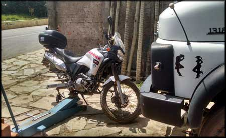Trocando a câmara de ar no borracheiro às margens da estrada
Voltei para a praça central, aonde encontrei minha garupa. Ficamos pela praça para que eu pudesse descansar um pouco do resgate da moto, e fazendo hora para almoçar logo, antes de sair da cidade para visitar outras cachoeiras.
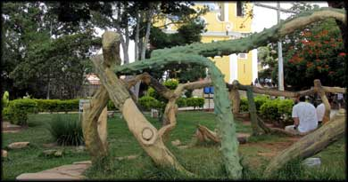Escultura em madeira na praça central de São Thomé das Letras
A praça, bem arborizada e com sombras, ajudava a amenizar o calor que estava fazendo no dia. O sol estava no volume máximo.
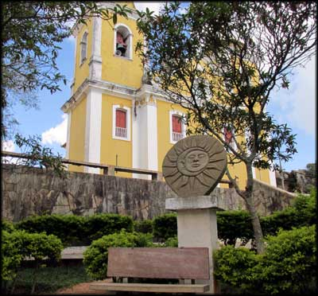Ainda na praça de São Thomé
Resolvemos almoçar por ali mesmo então, dessa vez não na comida a quilo, fomos no restaurante O Alquimista. Se a pizza da noite que chegamos estava boa, a refeição deveria ser boa por lá também. E era.

Parmegiana muito bom.
Pedimos merecidamente um prato de filé de frango à Parmegiana, que era bem servido e estava no ponto ideal, com bastante queijo gratinado. Perfeito.
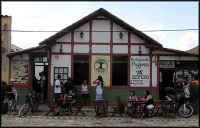Restaurante O Alquimista
Depois do almoço uma volta pela cidade para esperar a digestão antes de pegar a estrada.
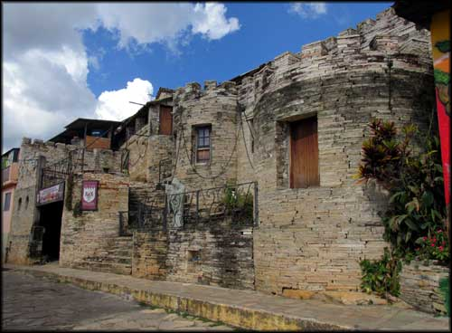Bar ou Pub de pedra, não chegamos a entrar para conhecer
São Thomé das Letras Cultural
A cidade estava bem movimentada, muitos turistas de todos os tipos. A feira de produtos dos artesãos da região estava movimentada, e se não estivesse de moto, que é difícil voltar com bagagem extra, teria ficado tentado a comprar uma das esculturas de dragão feitas em durepox, um trabalho bem maneiro. Não tirei foto disso. 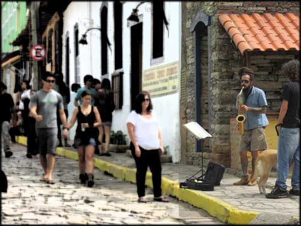Saxofone e Jazz, artista de rua
Pegamos a moto, e partimos para visitar outros locais que constavam no mapa turístico.
Ladeira do Amendoim
Primeiro fomos na tal Ladeira do Amendoim. Não fiz fotos lá, afinal é apenas uma rua de terra batida. Mas foi bem divertido constatar que, não sei se por ilusão de ótica, magnetismo da terra, ou o que seja, realmente as pessoas deixavam o carro solto em ponto morto, e ao invés do mesmo descer a ladeira, ele ia no sentido contrário, desafiando a força da gravidade. Com a moto deu certo também, foi bem esquisito e engraçado.Depois de rir um tanto com a expressão de espanto dos outros turistas que chegavam depois da gente, voltamos para a estrada. A meta era conhecer a cachoeira Shangri-lá, que pelas fotos, parecia ser muito bonita.
Cachoeira Shangri-lá
Rodamos bastante na estrada asfaltada. Não achamos fácil a saída para a cachoeira. Após voltar um pouco, saí em uma das ruas de terra à direita, e vi a pequena placa indicando a cachoeira.Foram mais uns 30 minutos de off road tranquilo até a entrada para a trilha a pé. Parei para perguntar no caminho, achei que pudesse estar na estrada errada, não sabia que era tão distante.
Mas estava certo, e finalmente chegamos.
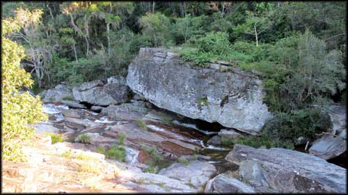Shangri-lá, rio e piscinas naturais
De novo, já estava no fim da tarde, o resgate e conserto da moto tomaram bastante tempo. Já começava a esfriar, então só fizemos um passeio pelas trilhas próximas, mas deu pra ver que se for bem cedo dá pra aproveitar bastante as piscinas naturais dali.
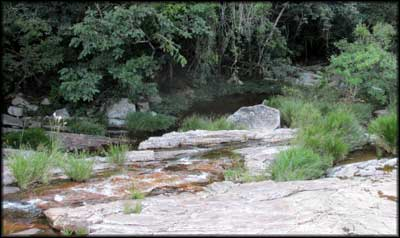Ainda Shangri-lá
Com o sol se pondo, começou a fazer frio, e como tinha ainda muito off road e depois estrada para voltar pra cidade, resolvemos voltar.
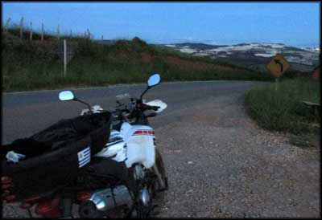Voltando para a cidade, ao longe
Show Pink Floyd Cover + Viagem para São Thomé das Letras?
Chegamos finalmente, de volta a São Thomé das Letras. E haveria um show! De uma banda cover do Pink Floyd! Perfeito. Pesquisei na internet do celular, e li que a banda, Ummagumma, era considerada o melhor cover de Pink Floyd do Brasil. Já empolgamos.Voltamos para a pousada, aonde deixaríamos a moto, afinal na cidade se faz tudo a pé. Depois de um banho, fomos comer um sanduíche. Comemos em um trailler que fica na "rua principal", um cheeseburguer monstruoso. Estávamos forrados.
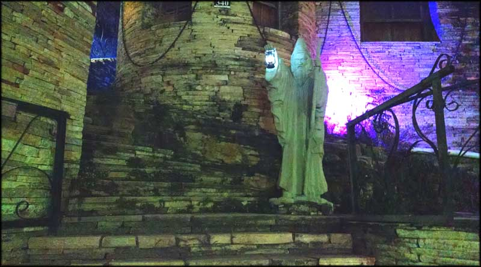O Mago de São Thomé, no bar de pedras
Pegamos as bebidas que eu havia deixado na geladeira da pousada, e fomos pro lugar aonde seria o show, que fica a exatamente um quarteirão da pousada.
Chegamos e já encontramos o pessoal de São Paulo, que nos ajudou no camping. Bom, paguei minha dívida, entregando as cervejas que comprei, finalmente.
Estava a maior confusão para entrar no show. Fui me informar sobre o ingresso. Não era barato. Não poderia entrar com bebidas. Lá dentro só vendia cerveja Itaipava, era cara. Não tinha vinho.
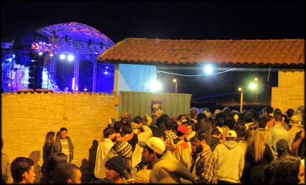Confusa entrada para o show do Ummagumma
Depois de beber umas cervejas compradas no mercadinho bem em frente, e comentar os prós e contras de entrar na área de show, já pensamos ficar por ali mesmo, pelo menos enquanto estivesse o empurra empurra na entrada. E o show começou. E o som estava ótimo, alto e nítido. E dava para ver o palco quase que inteiramente. Havia cerveja boa por preço bom e vinho no mercadinho. Havia carrocinha com churrasquinho, com pipoca, com tudo que os ambulantes vendem.
Ninguém mais nem considerava entrar no "estádio". Estava divertido, música boa, e confortável. E ali ficamos, curtindo Pink Floyd excelentemente reproduzido pela banda. Bebemos e comemos os ingressos, e ainda sobrou. Uma pena, pois a banda era muito boa e merecia lucrar com a gente na platéia. Mas eu não iria trocar Heineken gelada com preço normal por Itaipava quente no copo de plástico, nem ficar lá no empurra empurra. Deixa pra outra oportunidade.
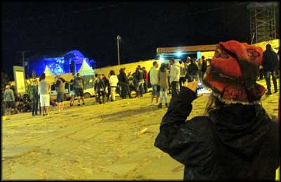Show na área ralé VIP
Foi um ótimo final de viagem. Cerveja gelada, música boa e muitas risadas com as estórias do pessoal de sampa que compartilhavam nosso camarote VIP na sarjeta.
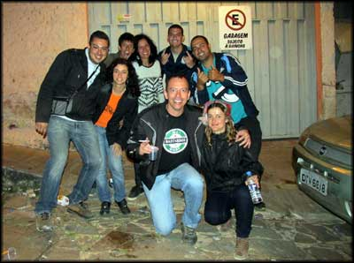Galera de Sampa, turma legal
Findo o show, nos despedimos e voltamos para a pousada. Descansar, pois no dia seguinte a volta pro Rio seria longa.
Voltamos da forma tradicional, como fazem as pessoas normais, pela estrada asfaltada. Off road só pra sair de São Thomé das Letras e chegar na estrada.
Pegamos chuva. Muita. Não levei minha capa de chuva porque a garupa não tinha, então fui solidário no banho gelado. Algumas paradas na Dutra para descansar e espantar o frio das roupas molhadas, um trânsito tradicionalmente insuportável na chegada no Rio, e enfim em casa.
Gostei muito de São Thomé das Letras, pretendo voltar com mais tempo. O fato das cachoeiras serem todas muito distantes da cidade é um pouco chato, porque o dia não rende. Tem que escolher uma, ir cedo, e ficar bastante tempo pra valer a pena. Mas, vale a pena. Voltarei, um dia.